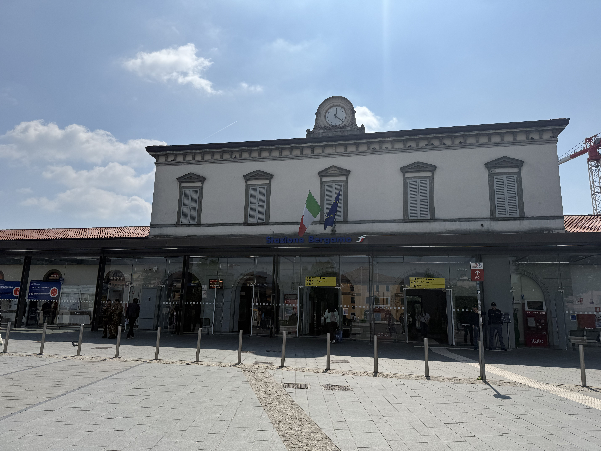
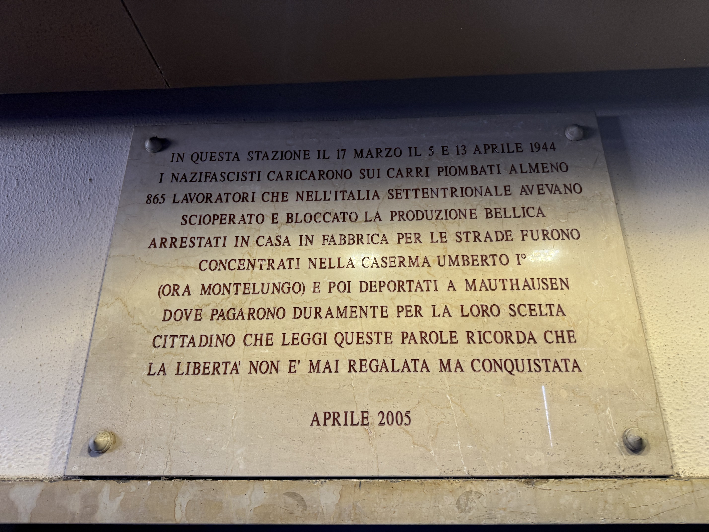

Historical Context
We are at Bergamo railway station, a crucial hub during the Nazi-Fascist occupation (1943-1945). This place, like many other Italian stations, was the scene of one of the most tragic events of the Resistance: from here, cattle wagons departed, deporting around 900 people, mostly Milanese workers, to Nazi concentration camps. The deportation was a consequence of the general strikes of March 1944, a massive workers' mobilization in Northern Italy that arose to demand better living conditions and oppose both the Italian Social Republic and the German occupiers in that terrible historical context.
The context refers to the period immediately following the Armistice of September 8, 1943, which marked the collapse of the Italian national state. After Mussolini's fall (July 25), the announcement of the Armistice with the Allies caused the dissolution of the royal army. The Germans, from allies became occupiers, implementing fierce control of the Center-North (Italian Social Republic, or "of Salò", a puppet of the Nazis). The South, liberated by the Allies after the landing in Sicily, was under the control of the Kingdom of the South. Italy was thus split in two, with the North being the theater of civil war, German military occupation, and the Resistance.
The strikers, aware of the risk of arrest and deportation, challenged the regime, suffering fierce repression. Transports were often organized from stations like this, where deportees were crammed in inhuman conditions for a journey into the unknown, marked by hunger, cold, and fear.
Why it is a Place of Memory
This station is a place of memory because it materializes the passage from the struggle for dignity at work to the tragedy of deportation. It is not only a geographical point of departure but a symbol of the violence suffered by a civilian community that chose to resist. Remembering the 900 deportees here means honoring their sacrifice and keeping alive the awareness of the values they fought for: freedom, social justice, and human dignity against oppression. The plaque speaks of a civic duty that goes beyond history: "We must not shoot anyone, we must set an example," as recalled by a survivor, emphasizing how from suffering, a choice for justice and not revenge was born. In an era where rights and democracy may seem taken for granted, this place asks us about the price paid for them and the importance of defending them every day.
Multimedia Content


Bibliographic Sources
- Streikertransport; Political Deportation in the Industrial Area of Sesto San Giovanni (Giuseppe Valota, 2007)
- La resistenza in Italia (Santo Peli, 2004) - The Resistance in Italy
- Itinerari di memoria (Mario Pelliccioli, 2023) - Memory Itineraries
Multimedia Sources
- Video "The Deportation of Workers from Bergamo" - YouTube (Bergamo News)
- Image 1: Wikipedia
- Image 2: pietredellamemoria.it